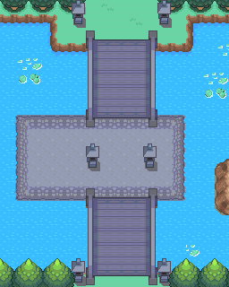

032 阿始的新节目
一句话目标：在桔梗市宝可梦中心找到电视教学明星“阿始大哥哥”，配合他录制一期全新的电视教学节目。
接取地点
- 桔梗市・宝可梦中心内部（室内地图 46:0，背景音乐为宝可梦中心），阿始（local_id 20，坐标 14,10）。
- 当前目录描述：帮助阿始录制新的电视教学节目；旧表描述亦作“阿始的电视教学”，并注明“有兴趣者可来精灵中心找我”。
准备条件
- 前置旗标 4246 已置位（共用接取进度条件；置位剧情由 Main 定位；未置位时阿始只做自我介绍，不给委托）。
- 无需携带特定道具或宝可梦。
操作步骤
- 与阿始对话。若前置未满足，他只说“你好啊！！我是精灵迷所熟知的电视教学的阿始大哥哥！”。满足前置后他会说明：他正准备拍摄新的教学电视节目，与往期不同，新节目需要其他人配合参演，并问你是否愿意参演。
- 选择配合。脚本
0x08AE5885置接取旗标 5862，显示“接受任务:<阿始的新节目>”，随后他说“好嘞！如果你准备好拍摄了，就告诉哥哥我哦！”。 - 再次与阿始对话，他会问“怎么样，准备好前往拍摄场地了吗？”，确认后他说“好嘞，那么我们一起出发吧！”，脚本
0x08AE5A46将你传送至拍摄地图 56:8。 - 在拍摄地点完成本期录影（该地图在训练师栏关联“262 阿始”，拍摄流程含与阿始的对战演出，细节未包含在包内）。
- 录影结算由脚本
0x08AE694E执行：置完成旗标 5863、获得 3 点 BracerPoints，并传送回桔梗市。 - 回到桔梗市宝可梦中心再与阿始对话（脚本
0x08AF031B）：他把自己的电话号码登录到你的精灵齿轮（置旗标 5968），并说“这次的录制辛苦你了！下次需要拍摄的时候，我会联系你哦！”。
交付检查
- 完成旗标 5863 置位即本期录影结束；完成后再对话进入电话登录对白，不再重复拍摄。
奖励
- 3 点 BracerPoints
- 追加：阿始的电话号码（登录到精灵齿轮，旗标 5968）
容易卡住的位置
- 前置旗标 4246 未满足时，阿始只会自我介绍，拿不到委托。
- 拍摄在独立地图 56:8 进行，触发方式是在接取后再次与阿始对话并确认出发，不是在桔梗市原地完成。
- 完成后的再次对话是电话登录剧情，不是新任务或第二期拍摄。
来源与待补
- 包：
data/quest_packets/032.json；接取脚本0x08AE5885，入口脚本0x08AE5820/0x08AE5581，前往拍摄0x08AE58F1/0x08AE5A46，完成0x08AE694E，电话0x08AF031B。 - 相关训练师：262 阿始。
- 相关地图：桔梗市宝可梦中心 46:0、拍摄地图 56:8。
- 未定位/待补：拍摄地图 56:8 内部演出与对战脚本不在本包内，其细节（是否有胜负要求、回合流程）需另查；前置旗标 4246 的置位剧情由 Main 定位，勿据第 023 号脚本反推。
地点地图
共享RGB底图；点击可缩放定位。数字对应本页相关地点，不代表地图上全部事件。
桔梗市


1 阿始的新节目（14,10）
真新镇

地图范围记录：当前资料没有精确人物／遭遇坐标。